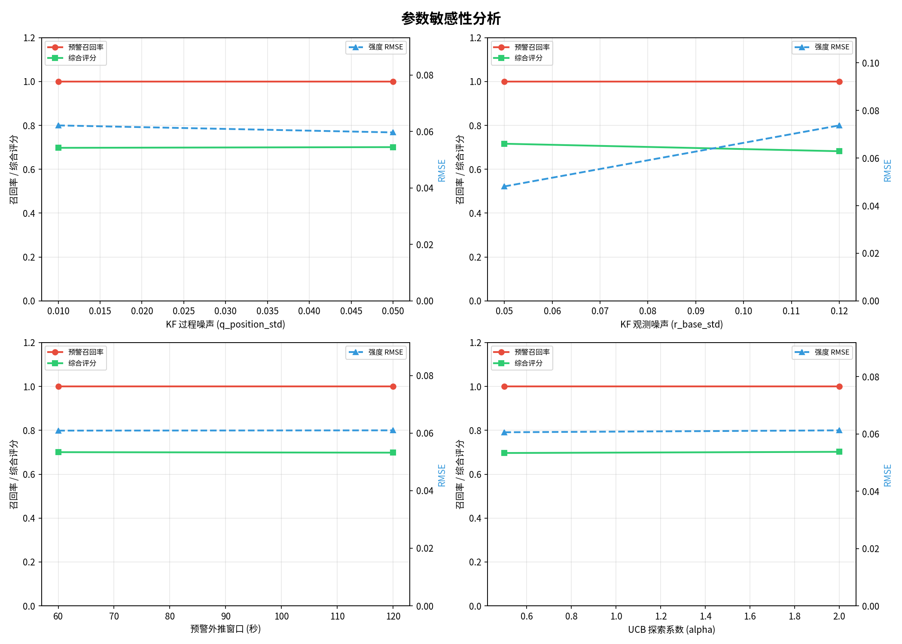
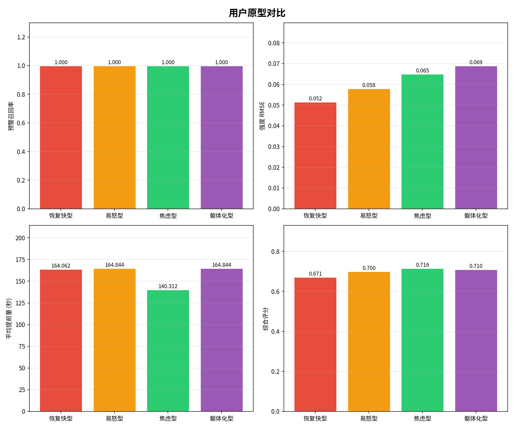
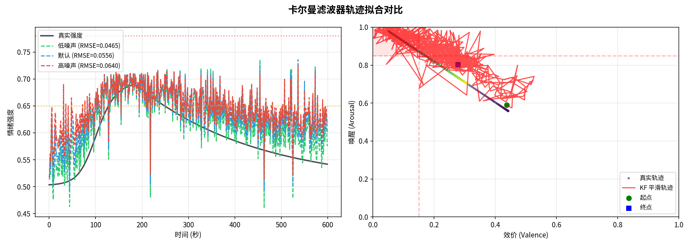

| 排名 | 参数标签 | 原型 | 综合评分 | 召回率 | 精确率 | RMSE(强度) | 提前量(s) | 漏报 | 误报 |
|---|---|---|---|---|---|---|---|---|---|
| 1 | q0.05_r0.05_w120_a0.5 | 焦虑型 | 0.745 | 1.00 | 0.00 | 0.0462 | 128 | 0 | 0 |
| 2 | q0.05_r0.05_w60_a0.5 | 焦虑型 | 0.743 | 1.00 | 0.00 | 0.0475 | 120 | 0 | 0 |
| 3 | q0.01_r0.05_w60_a0.5 | 易怒型 | 0.742 | 1.00 | 0.00 | 0.0489 | 165 | 0 | 0 |
| 4 | q0.01_r0.05_w120_a2.0 | 焦虑型 | 0.741 | 1.00 | 0.00 | 0.0490 | 120 | 0 | 0 |
| 5 | q0.05_r0.05_w60_a2.0 | 焦虑型 | 0.740 | 1.00 | 0.00 | 0.0498 | 118 | 0 | 0 |
| 6 | q0.01_r0.05_w60_a0.5 | 焦虑型 | 0.739 | 1.00 | 0.00 | 0.0504 | 140 | 0 | 0 |
| 7 | q0.01_r0.05_w60_a2.0 | 易怒型 | 0.739 | 1.00 | 0.00 | 0.0504 | 162 | 0 | 0 |
| 8 | q0.05_r0.05_w120_a2.0 | 焦虑型 | 0.739 | 1.00 | 0.00 | 0.0511 | 138 | 0 | 0 |
| 9 | q0.05_r0.05_w120_a2.0 | 躯体化型 | 0.737 | 1.00 | 0.00 | 0.0520 | 165 | 0 | 0 |
| 10 | q0.01_r0.05_w120_a2.0 | 易怒型 | 0.737 | 1.00 | 0.00 | 0.0525 | 165 | 0 | 0 |
预警召回率：真实危险事件中被成功预警的比例。越高表示漏报越少。
预警精确率：所有发出的预警中，真正对应危险事件的比例。越高表示误报越少。
强度 RMSE：卡尔曼滤波器输出强度与真实强度之间的均方根误差。越低表示拟合越好。
综合评分：拟合(40%) + 预警(40%) + 推荐(20%) 的加权总分。用于排序最优参数。
提前预警时间：从预警触发到情绪峰值的时间差。理想范围 30-120 秒。